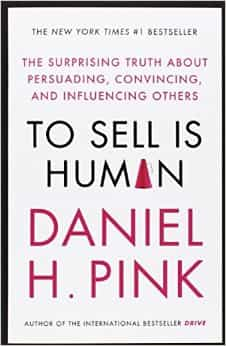

Rod Berne is a student, writer, and thought criminal. His columns run every Saturday. Follow him on Twitter.


To Sell is Human by Dan Pink is a book about influence in the modern era. It combines interesting research with anecdotes about individual cases of people who have found success. Sprinkled throughout the book are exercises that will both amuse and stimulate you, links to online tests and assessments, and many book recommendations regarding social skills, improvisation, and influence.
Much of this book can be applied to game. It’s been said more than once that game is like sales, and learning about influence and sales can improve you skills with people in any situation.
Pink makes a convincing case that in the modern age we must all be adept at sales to be successful. He goes into detail about how even if we are not directly selling merchandise, we are always selling ourselves. This will be a review and summary of each of the three sections of the book.
Dan Pink cites a study that shows one in nine Americans work in sales. However, he also shows that the other eight work in sales as well. We all work day in and day out to influence, persuade, and move others to act in a manner we desire. That is the main point of the book: moving others. Whether it be money, time, attention, or a decision in our favor, much of what we do amounts to moving others.
We’re all in sales now. Some people are uncomfortable with this fact, but Pink shows that in this new age of hyperconnectedness, we are better off in many ways. In the past, sellers had the power. If you went into a car dealership 30 years ago, chances are the salesman knew much more than you about the specs of whatever car you were interested in. Today with the internet, it’s not uncommon for buyers to know more than sellers.
Even if a seller screws you over, there are many platforms for you to let thousands of others know via social media and review sites to warn others to avoid a person or company. Everyone is a couple of quick taps on their phone away from leaving a review. We’re moving from Caveat Emptor (buyer beware) to Caveat Venditor (seller beware).

Pink provides his version of the new ABCs (no longer “Always Be Closing”)
A—-Attunement
B—Buoyancy
C—Clarity
These are the 3 qualities one should develop have in order to be successful at either sales or non-sales selling in the new landscape of the 21st century.
Attunement hinges on three principles.
1. Increase your power by reducing it. This means essentially seeing the world through the customer’s eyes.
2. Use your head as much as your heart. In a 2008 experiment at INSEAD business school in France, researchers simulated a negotiation over the sale of a business. One-third of the negotiators were instructed to imagine what the other side was feeling, one-third was instructed to imagine what the others side was thinking, and the final third was the control group. The group who imagined what the other side was thinking managed to make a deal that satisfied both sides 76% of the time. Perspective-taking is crucial.
3. Mimic strategically. Matching our mannerisms and vocal tones to the other person is fundamental to attunement; just make sure the other person doesn’t notice. A Dutch study found that waitresses who repeated diners’ orders word for word earned 70% more tips than those who paraphrased orders. The Dutch are cheap people, so this means a lot.
Anyone who sells must contend with rebuffs, refusals, and repudiations (and if you’re approaching women in the West, outright insults). Buoyancy is Pink’s word for dealing with rejection and maintaining your stride.
There are 3 components to buoyancy which apply before, during, and after any effort to move others.
1. Before: Self-Talk. We humans frequently talk to ourselves. The best form of self-talk is to move from making statements (e.g., I can do this, I got this, I’m the greatest) to asking questions (Can I do this? Can I make a great pitch? Can I talk to her?). There are two reasons for this. Number one, by asking the question you elicit an answer, it requires you to think about the question you just asked. Number two, this sort of interrogative self-talk may elicit intrinsically motivated reasons to accomplish your goal.
2. During: Emotion Ratios. Positive and negative emotions broaden people’s ideas about possible actions, expanding our awareness to a wider range of thoughts making us more creative. Studies show that positive emotions can expand our behavioral repertoires and heighten intuition. Pink claims that there is a ratio of emotions best suited for people which is 3-to-1 positive to negative emotions.
3. After: Explanatory Style. At the end of a day, how you think about it can go a long way in determining whether you succeed. Explanatory style is a form of self-talk that occurs after an experience. In one study, researchers found that salespeople with an optimistic explanatory style sold more insurance and kept their jobs longer.
This third quality hinges less on problem solving and more on problem finding. In research done at the University of Chicago, researchers found that people most disposed to creative breakthroughs in art, science, and other endeavors tend to be problem finders.
Pink gives a quick example. Suppose fifteen years ago you were in the market for a new vacuum cleaner. You would have had to go into a store and speak to a salesman who likely knew much more than you about the product. Today, you can hop online and research the vacuum model you want. But what if you’ve gotten your problem wrong? Maybe your real aim isn’t to buy a vacuum cleaner, but to have clean floors. Maybe the problem is the screen on your windows aren’t keeping out the dust, maybe your carpet collects dirt too easily and you need a new one, maybe you shouldn’t but a vacuum but instead join a neighborhood cooperative that shares appliances, or hire a cheap cleaning crew.
There is one interesting exercise in this chapter to clarify others’ motives using 2 questions.
1. On a scale of 1 to 10, 1 meaning “not ready at all” and 10 meaning “totally ready,” how ready are you to [insert difficult task]?
2. Why didn’t you pick a lower number?
The second question catches the person off guard. The person moves from defending their current behavior to explaining why, on some level, they want to behave differently. It allows the person to clarify their motives.
This section focuses on three key abilities concerning what to do in sales: to pitch, to improvise, and to serve.
The purpose of a pitch isn’t necessarily to move others to immediately adopt your idea. The purpose is to offer something so compelling that it begins a conversation, brings the other person in as a participant, and eventually arrives at an outcome that appeals to both of you. This chapter zeroes on in new alternatives to the elevator pitch, some examples include.
The book emphasizes the role of improv in moving products today. The old method of sales relied on stable scripts (if the customer says this, you should say that) but today it has given way to complex and unpredictable conditions that favor improvisation. This chapter delves into how to listen to offers and make your partner look good in the process.
The book closes out on saying that service is the most important quality. It’s a feel-good ender, and it mostly works. He writes that sales and non-sales selling are ultimately about service. If you believe in your product (or yourself, or your company, etc.), you will be more likely to move others to believe in it too. Pink speaks of service in its best form—improving the lives of others and in turn, improving the world. This can happen if we follow two principles: Make it personal and make it purposeful.
The secret to sales is to remember who we are serving and why we are serving them. In sales, we do better when we move beyond just trying to make a sale and remember that we are serving a person.
Great short book, recommended.
Read More: Sales vs. Game